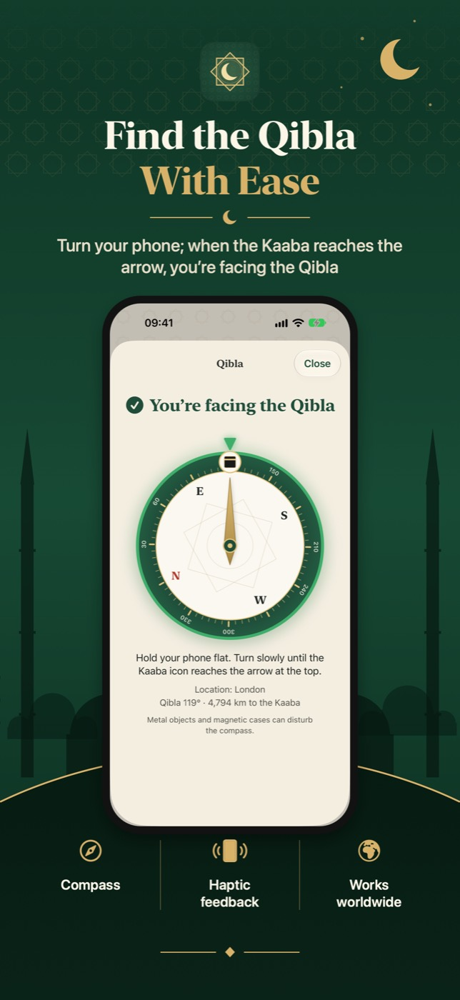
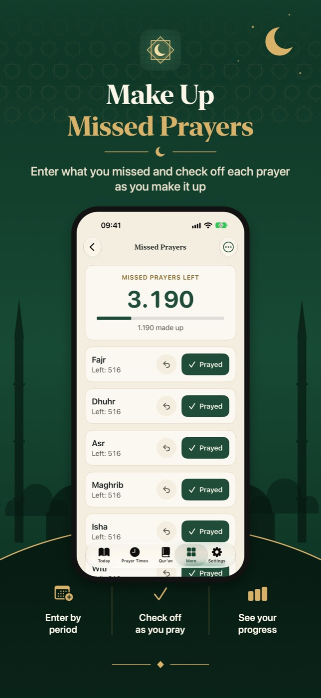
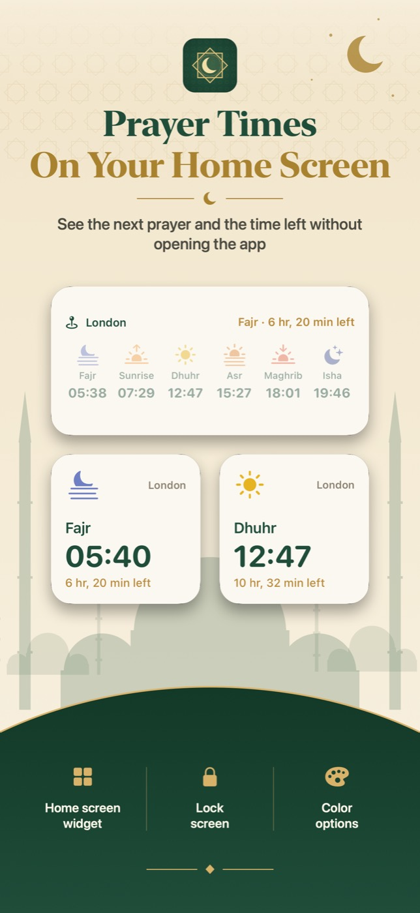

Prayer times
Never miss a prayer.
Accurate prayer times for your city, anywhere in the world. A separate alert for each prayer: adhan, qanun or your phone's sound, at prayer time or 10, 15 or 30 minutes before.
The Holy Qur'an
Listen, read, continue where you left off.
All 114 surahs in mushaf script with translation. Listen verse by verse or the whole surah; it keeps playing on the lock screen. Verses you listened to are marked, and Qur'an Radio plays surahs one after another.

Qibla
Turn your phone, find the Qibla.
When the Kaaba reaches the arrow, you are facing the Qibla. Works worldwide.
Five passages a day
A verse, a hadith, a dua.
Plus one of Allah's Beautiful Names and a word of wisdom, every day. Save your favorites and share them as beautiful cards.

Tools for worship
Missed prayers and dhikr in one place.
Enter the prayers you missed and check them off as you make them up. Count dhikr by tapping, with a vibration at your goal. Learn the 99 Names, one a day.

Widgets
Prayer times on your Home Screen.
Today's prayer times, the next prayer and the time left on your Home and Lock Screen. Verse of the Day and Name of the Day widgets.
No ads. Simple. Yours.
All core features are free and there are no ads. Your location never leaves your phone. An optional one-time Bismillah Plus purchase unlocks more reciters, extra card designs, Qur'an page colors and widget colors; you can also leave a tip to support development.
Support
For questions, suggestions or to report a problem, write to us at hyapps@outlook.com.
Prayer times differ from my mosque's calendar.
The calculation method is chosen automatically for your country. You can change it in Settings → Calculation method.
I don't get notifications.
Make sure notifications are on in the app's Settings and allowed in your phone's Settings → Notifications → Bismillah. Notifications are prepared for the next 7 days each time you open the app, so open it now and then.
The Qibla compass looks wrong.
Hold your phone flat, away from metal objects and magnetic cases. Moving the phone in a figure 8 a few times recalibrates the compass.
I missed a day. Is my progress lost?
No. Your learned names and streak are kept; just continue where you left off.
More from HY Apps